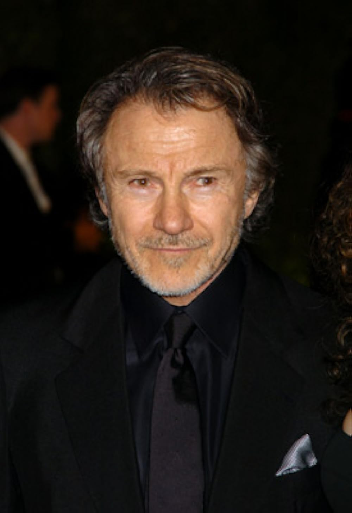
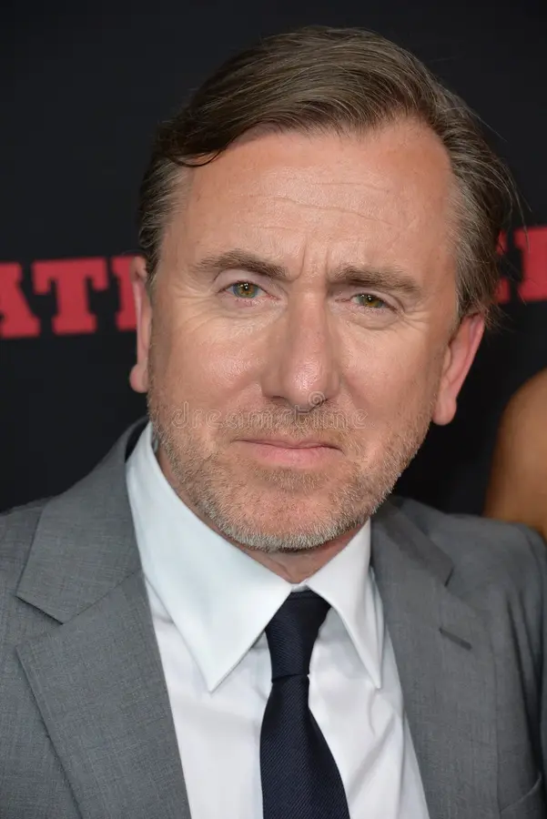
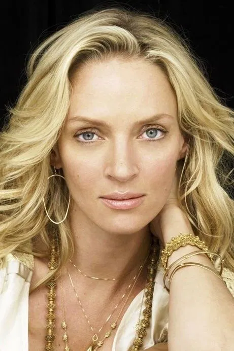
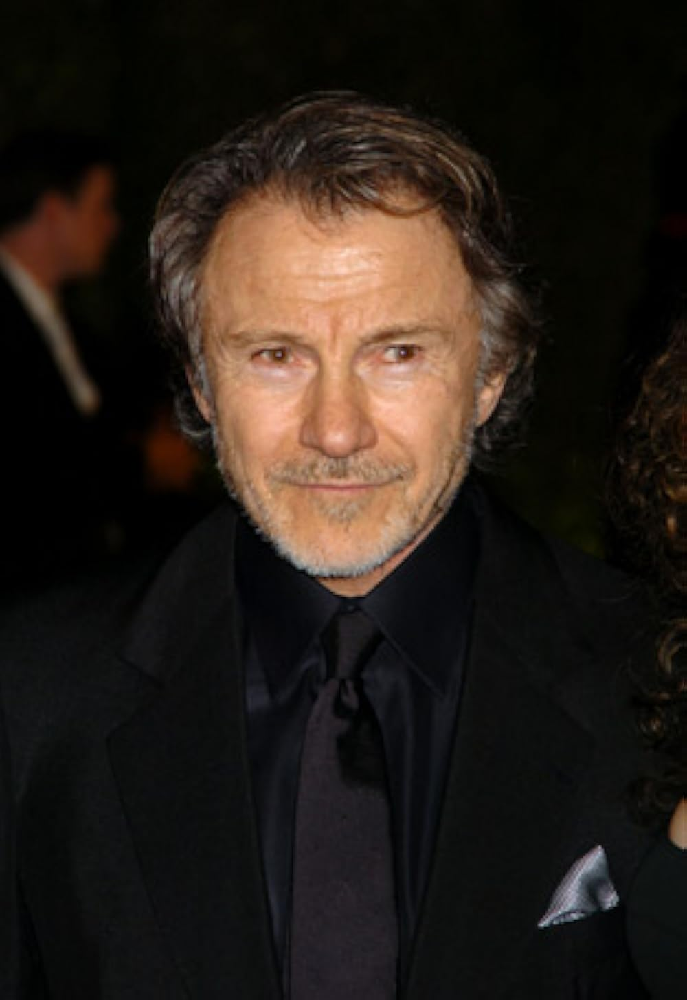
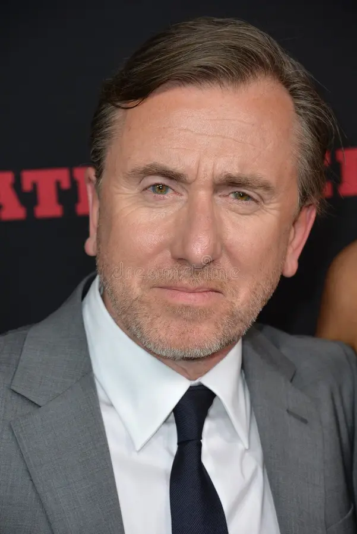
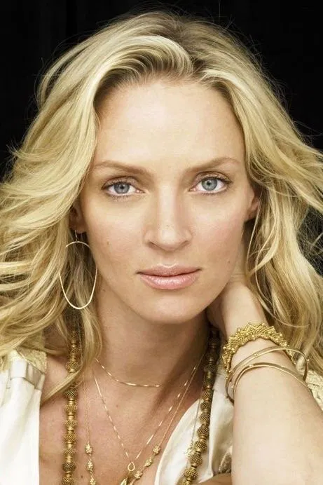

Samuel L. Jackson – 6 appearances
Appearances
Pulp Fiction (1994) – Played Jules Winnfield, one of Tarantino’s most iconic characters, delivering memorable dialogue and cementing his place in film history. Jackie Brown (1997) – Starred as Ordell Robbie, a smooth but dangerous gun runner. Kill Bill: Vol. 2 (2004) – Brief role as Rufus, the church organist. Inglourious Basterds (2009) – Provided voice narration. Django Unchained (2012) – Played Stephen, the manipulative house slave loyal to Calvin Candie. The Hateful Eight (2015) – Took center stage as Major Marquis Warren, a former Union officer turned bounty hunter.
Summary
Samuel L. Jackson is Tarantino’s most frequent collaborator, and his performances have helped define the director’s style. He has taken on everything from leading roles, like Jules in Pulp Fiction or Major Warren in The Hateful Eight, to brief cameos and even narration. What stands out is how naturally his energy and delivery fit with Tarantino’s writing, which makes him feel essential to the director’s body of work.
Michael Madsen – 5 appearances
Appearances
Reservoir Dogs (1992) – Played Mr. Blonde, infamous for the “stuck in the middle” torture scene. Kill Bill: Vol. 1 (2003) – Brief role as Budd in setup. Kill Bill: Vol. 2 (2004) – Larger role as Budd, The Bride’s down-and-out former assassin colleague. The Hateful Eight (2015) – Played Joe Gage, the mysterious cowboy. Once Upon a Time in Hollywood (2019) – Appeared as Sheriff Hackett in Rick Dalton’s TV show.
Summary
Michael Madsen has played some of Tarantino’s most dangerous and unpredictable characters. His role as Mr. Blonde in Reservoir Dogs became one of the film’s most infamous moments, and his later work as Budd in Kill Bill showed a more tired but still threatening figure. Madsen’s ability to bring both menace and a sense of unpredictability makes him one of Tarantino’s go-to actors.
Harvey Keitel – 4 appearances
Appearances
Reservoir Dogs (1992) – Played Mr. White, one of the main criminals in Tarantino’s debut. Pulp Fiction (1994) – Appeared as Winston Wolfe, the calm “cleaner” who solves problems. From Dusk Till Dawn (1996, written by Tarantino) – Starred as Jacob Fuller, though not directed by Tarantino, it added to their collaboration. Inglourious Basterds (2009) – Provided the voice of an OSS officer in a cameo.
Summary
Harvey Keitel was crucial in helping Tarantino launch his career, not only by starring in Reservoir Dogs but also by supporting its production. He brought authority and calm to his role as Winston Wolfe in Pulp Fiction, which remains one of the standout supporting performances of the 90s.
Tim Roth – 4 appearances
Appearances
Reservoir Dogs (1992) – Played Mr. Orange, the undercover cop, one of the standout performances in the film. Pulp Fiction (1994) – Appeared as Pumpkin, the diner robber in the film’s opening and closing scenes. Four Rooms (1995) – Starred in the segment directed by Tarantino, playing Ted the Bellhop. The Hateful Eight (2015) – Played Oswaldo Mobray, an eccentric English hangman.
Summary
Tim Roth has been part of Tarantino’s work since the very beginning, playing major roles in both Reservoir Dogs and Pulp Fiction. His characters often stand out because of their talkative, eccentric nature, which fits well with Tarantino’s focus on dialogue. Even when he isn’t the lead, Roth adds color to the ensemble and helps capture the director’s mix of humor and tension.
Uma Thurman – 3 appearances
Appearances
Pulp Fiction (1994) – Played Mia Wallace, one of her defining roles. Kill Bill: Vol. 1 (2003) – Starred as The Bride/Beatrix Kiddo, a former assassin seeking revenge. Kill Bill: Vol. 2 (2004) – Continued The Bride’s story with more depth and dialogue.
Summary
Uma Thurman’s collaboration with Tarantino is one of the most important of his career. While her first role as Mia Wallace in Pulp Fiction was iconic, it was her performance as The Bride in the Kill Bill films that became central to Tarantino’s vision as a filmmaker. Although she hasn’t appeared as often as others, the characters she has played are some of the most lasting in his filmography.
 




